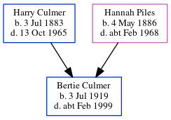

Dorothy Emma Culmer (née Gardiner) 1909 - 1998
[ Home ] | [ Calendar ] | [ Surnames Index ] | [ Errors ] | [ Family History ]Dorothy Gardiner, the wife of Robert Nigel Charles Culmer (the third cousin once-removed on the mother's side of Nigel Horne), was born in Faversham, Kent, England on 29 Oct 19091,2,3 and married Robert (a retail outfitting clothing manager & buyer with whom she had 4 children: Gwenda L, Robert Michael, Terrence J and Kenneth Nigel, along with 2 surviving children) in Faversham around Aug 19354. On 29 Sept 1939, she was living at 22 Beaconsfield Road, Chislehurst, Kent, England1.
She died on 14 Nov 1998 in Greenwich, London, England3.
Children
- Robert Michael was born on 6 Sept 1937
- Kenneth Nigel was born on 16 Jan 1942
Citations
- 1939 Register - Findmypast (was recorded at this address)
- England & Wales births 1837-2006 - Findmypast
- England & Wales deaths 1837-2007 - Findmypast
- England & Wales Marriages 1837-2005 - Findmypast
Media
England & Wales births 1837-2006 - BMD/B/1909/4/AZ/000205/300
England & Wales deaths 1837-2007 - BMD/D/1998/11/82441265
England & Wales marriages 1837-2005 - BMD/M/1935/3/AZ/000560/054
1939 Register - TNA/R39/1251/1251F/020/38
Family Tree
Map
Generated by ged2site. Last updated on Jul 3, 2024
Known Issues
No records of living with anyone